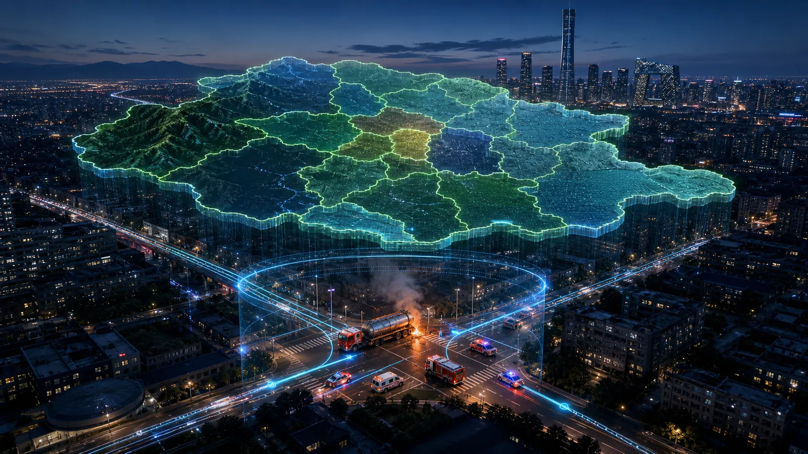
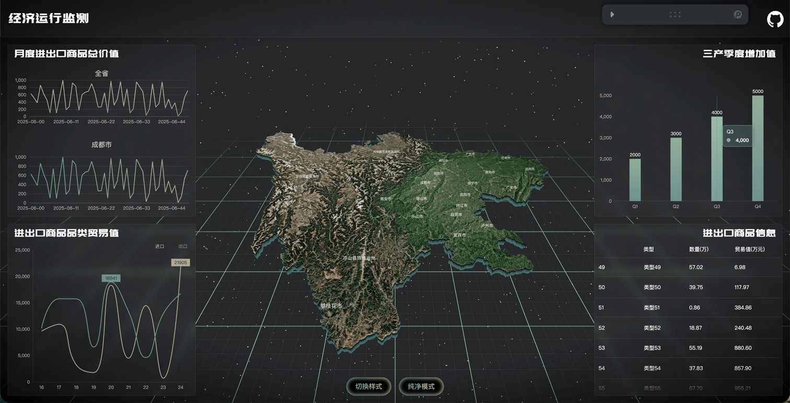
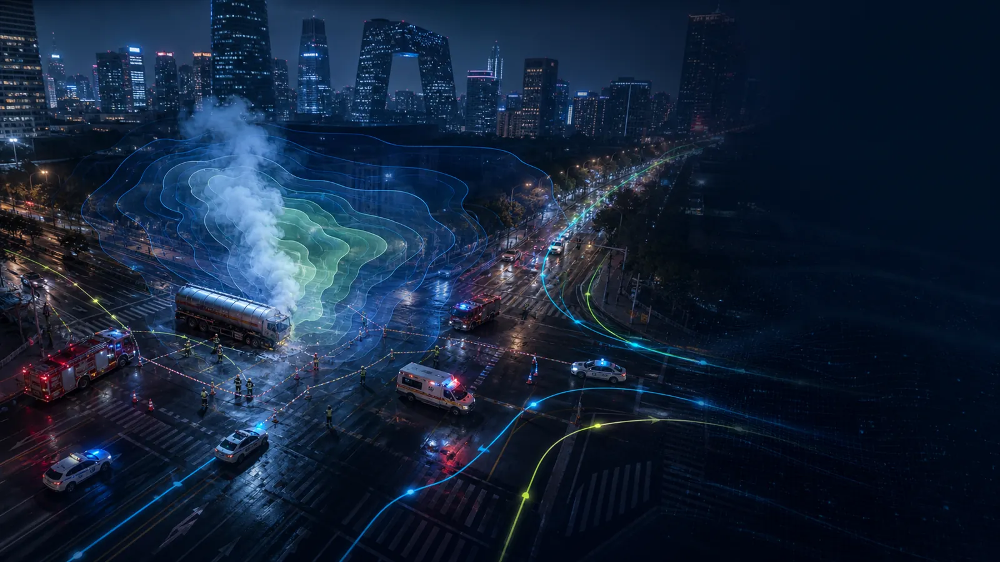
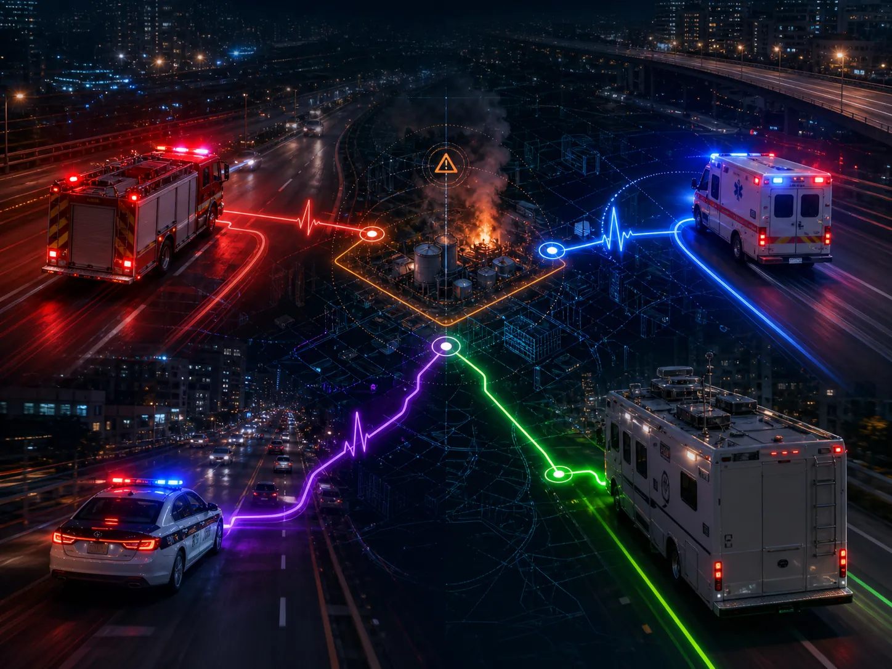
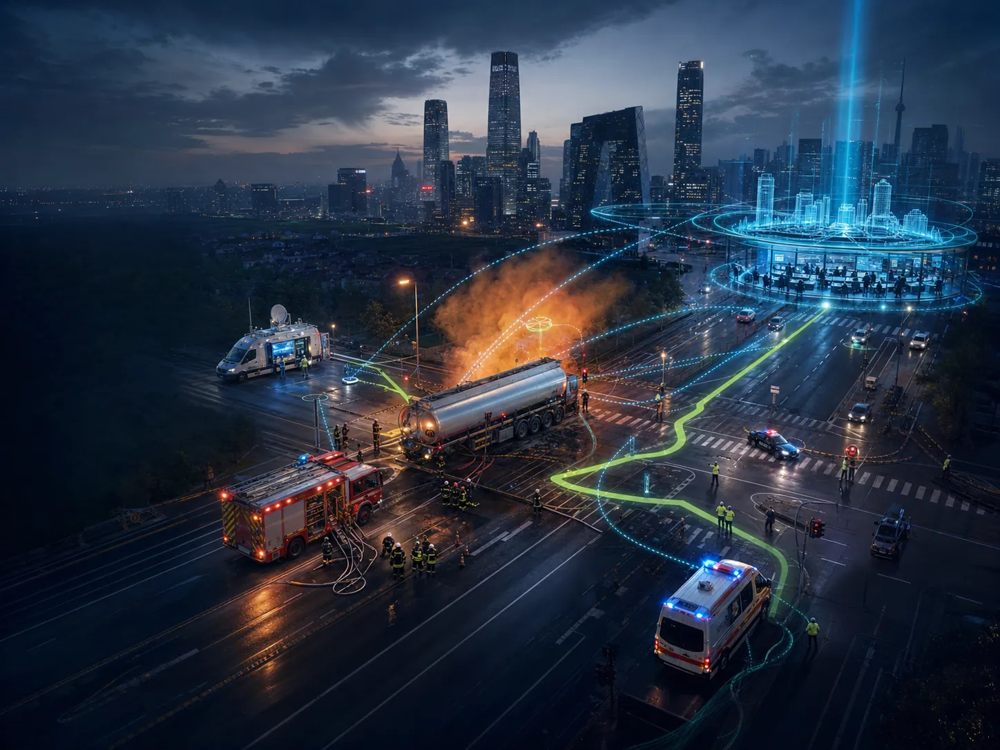
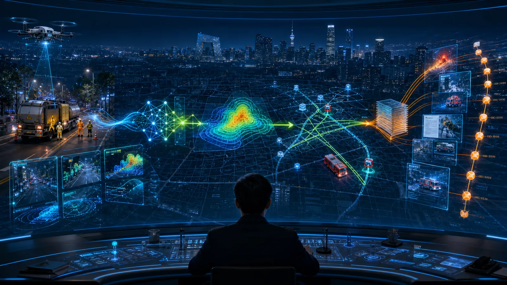
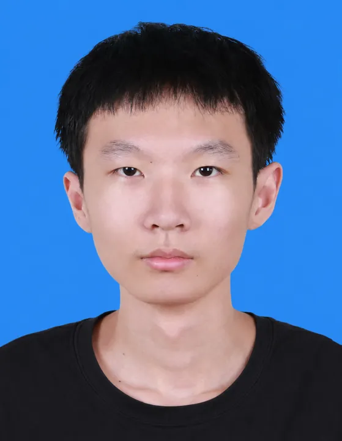
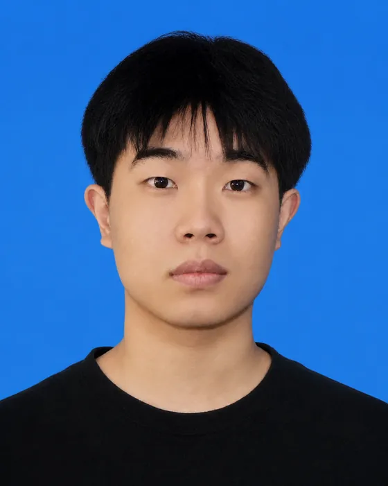
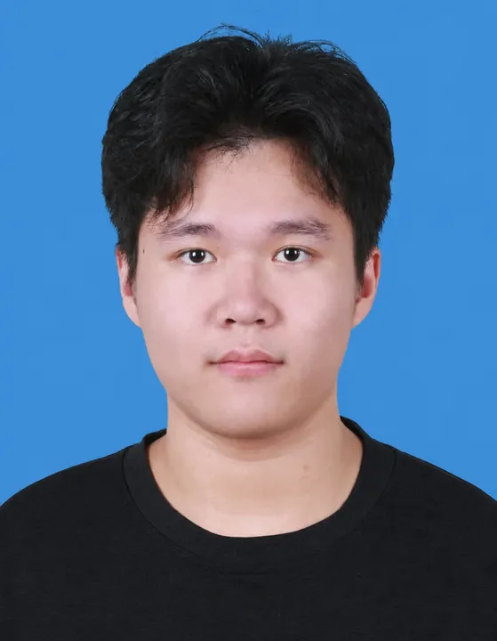

京域智城 ×
灵境哨兵
面向城市运行与突发事件的可视化决策平台
从北京城市态势感知，进入可解释的全链路应急处置
政治背景决定建设方向，首都治理提出现实需求
数字中国建设强调数据共享和系统协同。通俗地说，就是城市各部门不能再各管一摊，要让数据真正帮助判断和决策。
国家推进“智慧应急”，要求把监测预警、指挥救援和信息发布连接起来，发生事故后能够更快形成统一行动。
北京是超大城市，人口、道路和公共资源高度集中，需要用数字化手段掌握城市状态、研判风险并协调多部门处置。
一套城市数字底座，贯通“看见城市”与“处置事件”
京域智城｜看见城市
承载北京 16 区态势、核心城区三维建筑、真实道路、车流、气象和治理数据。
灵境哨兵｜处置事故
完成图片识别、扩散计算、道路封控、路径重规划、多部门调度与报告生成。
核心价值不是把模型堆在一起，而是让同一事件在同一空间坐标和时间线上形成“输入—计算—决策—行动—复盘”的证据闭环。
把城市事件从“看见”
推进到“可计算、可行动、可复盘”
平台以北京城市数字底座承接区县、建筑、道路和资源数据，再把事故图片、气象与传感信息送入独立算法链，形成可执行的部门任务和可追溯的处置证据。
北京全域态势
与核心区数字孪生
平台采用“市级态势 + 核心场景”双尺度组织：先看北京 16 个区的气象、地势与治理差异，再进入核心城区，把建筑、真实道路、车辆和风险图层放进同一空间坐标。
16 区全域态势
按区县代表坐标获取温度与降水；用代表性高程表达地势差异，并与治理指标联动。
气温 · 降水 · 地势 · 治理态势核心城区三维场景
核心城区承载建筑、道路、车辆、事故风险区与救援路线，服务交互演示和应急推演。
建筑 · 道路 · 车辆 · 风险区 · 路径可验证数据边界
接口状态、离线快照、原始记录与算法说明分别展示，避免把演示数据包装成完整城市实测。
来源 · 时间戳 · 降级状态 · 算法边界明确不宣称全北京市所有建筑一一建模，也不把代表性地势视为官方完整 DEM；比赛结论只在已展示的数据与模型边界内成立。

同一城市坐标，串联空间、治理与区县
京域智城不是三套互不相干的大屏，而是让同一批建筑、道路、事件和气象记录，在不同角色视角中持续复用。评委切换入口时，事件位置、时间戳与处置状态保持一致。
看城市空间
以 6,016 条建筑记录和 674 条道路记录构成核心城区空间底座，叠加车流、风险区、救援车辆和公共资源。SPACE TWIN · BUILDING / ROAD / RESOURCE
看治理闭环
把事件闭环率、设备在线率、平均响应时间和交通运行指数关联到具体空间对象；发现异常后可直接进入资源调度与审计详情。GOVERNANCE LOOP · EVENT → ACTION → AUDIT
看区域差异
按北京 16 个区展示温度、降水与代表性地势；气象输入变化后，风险图层与处置条件同步刷新，并保留离线降级快照。DISTRICT LAYER · WEATHER → RISK INPUT
三种入口共享同一坐标、同一状态与同一证据链——切换视角，不丢失事件上下文。
建筑、道路与事件
共享统一坐标
空间底座不是静态背景，而是事件计算的共同索引：每个对象都以坐标、属性和状态参与后续研判。
建筑轮廓与道路节点完成字段校验、坐标读取和唯一标识绑定。
GeoJSON · NODE / EDGE · OBJECT ID事件、车辆、风险区、医院与消防站按同一空间参考叠加，点击即可回到对象属性。
BUILDING · ROAD · EVENT · RESOURCE风险覆盖改变道路权重，封控标记进入 A* 搜索，车辆位置与到达状态持续回写。
RISK OVERLAY → ROAD WEIGHT → ROUTE区县气象不是装饰
而是风险计算输入
气象条件决定泄漏物向哪里扩散、扩散多快，以及哪些区域和道路需要优先管控。平台把区县实况转化为风险模型参数，而不是停留在天气展示。
影响气体浮升、近地浓度与扩散稳定度；区县温差变化会改变风险区的空间权重。
影响污染物沉降、道路通行和现场作业条件，并作为救援车辆 ETA 与封控策略的修正量。
代表性高程用于识别低洼积聚和地形阻滞方向；明确标注为演示数据，不等同完整 DEM 产品。
治理指标回答三个问题
平台不是把统计数字堆在大屏上，而是把每个指标绑定到区县、道路、设备与事件对象，使管理人员能够沿着同一条证据链完成观察、定位和处置。
现在怎样｜形成全域运行基线
汇总事件闭环率、感知设备在线率、平均响应时间与交通运行指数，结合实时值、目标值和历史区间判断城市总体状态。
哪里异常｜把变化落到空间对象
通过区县排名、趋势斜率、道路拥堵与事件热区进行交叉筛选，定位异常发生位置、持续时间以及可能影响的周边资源。
下一步做什么｜从异常跳转到行动
选中指标即可进入资源详情、事件处置和道路调度；处置责任、操作时间与结果同步写入审计记录，形成可复盘闭环。

从交互终端到底层数据，每层职责清晰
正向总线把用户与现场输入逐层转化为模型结果和部门任务；回写总线把车辆、资源和处置状态重新沉淀为可追溯记录。
每次状态变化
都触发下一轮计算
平台持续接收现场图片、气体传感、风向气象、道路封控和救援车辆位置，并把算法结果转化为消防、医疗、警务与交通的协同任务。行动结果重新写回数字孪生场景，形成可解释、可追踪、可复盘的处置闭环。
风向气象 · 道路状态
A* 可通行救援路径
任务、路线与预计到达时间
封路进度 · 资源余量
时间戳 · 应急处置报告
同步调整路径与部门任务
危化品事故
全链路处置
从车辆故障、联合告警，到风险扩散、道路封控、救援抵达与报告生成。
约 72 秒可交互演示脚本

不是播放视频
而是现场操控一次处置
演示以危化品运输车突发泄漏为统一任务输入。每进入一个阶段，页面都会公开本阶段接收的数据、调用的算法、下发的任务和产生的状态，使评委能够暂停追问，也能直接跳到关键算法节点复核。
事故图像、气体浓度、风向风速、道路状态和救援资源均显示来源与更新时间。
ONNX 类别与置信度、扩散风险边界、封控路段和 A* 路径均能单独停留检查。
暂停不丢状态；跳转自动补齐上下文；重放恢复初始车辆、风险区与任务日志。
图片在浏览器本地完成
ONNX 推理
模型通过 ONNX Runtime Web 与 WASM 执行，图片不上传服务器。评委更换输入后，系统同步给出类别、检测框、置信度、推理耗时与降级状态。
模型不是“看起来准确”
而是能够被检验
本页回答三个问题：识别结果是否可复现、错误发生在哪里、系统如何避免把单次视觉判断直接变成处置命令。
总体判断正确率
告警中真正例比例
3 个正例均被检出
查全与查准的平衡
回归集中没有漏掉正例，但出现 1 次误报，因此 Precision 降至 75%。当前结果能证明功能链可运行，不能证明面对真实城市灯光、烟雾与复杂天气时仍具备同等泛化能力。
Gaussian Plume 解释
污染物如何随风传播
将泄漏源和实时气象转化为连续浓度场，再依据阈值生成高风险区、警戒区与安全区。
输出不是一张静态色块，而是随风速、风向和源强变化持续重算的空间边界，可直接约束封路、疏散和救援路线。
风险区改变道路权重
A* 重新搜索消防路线
系统把 674 条道路记录组织成可搜索图网络。扩散风险区与道路相交后，风险覆盖路段立即改变通行代价，消防路线随之重新计算。
道路图输入
路口作为节点，道路作为边；边记录长度、方向与基础通行成本，事故点和消防站映射到最近可达节点。
封控改变权重
高风险覆盖路段设为不可通行，警戒区路段增加惩罚权重；未受影响道路保留原始成本。
启发函数引导搜索
A* 使用节点到目标的空间距离作为启发函数，在可通行子图中比较累计代价并记录搜索节点。
输出可核验新路线
同步展示新路线距离、预计到达时间、受影响路段和搜索节点数，便于评委比较封控前后变化。
真实性边界 当前只有消防车执行真实道路 A* 重规划；救护车与警车使用预设路线种子，不宣称全部车辆均为动态寻路。
四类智能体
围绕同一事件
明确责任分工
指挥智能体读取事件等级、扩散边界、道路状态与资源余量，按确定性规则生成任务；消防、医疗与交通分别接收结构化输入，并把执行状态持续写回同一事件时间线。
- 输入
- 泄漏坐标 · 风险区 · 道路状态
- 输出
- 出警路线 · ETA · 处置回写
- 输入
- 伤员数量 · 医院容量 · 道路 ETA
- 输出
- 接诊医院 · 车辆任务 · 救治时序
- 输入
- 风险边界 · 路网权重 · 拥堵状态
- 输出
- 封控范围 · 替代路线 · 疏散通道
- 输入
- 部门消息 · 阶段状态 · 资源余量
- 输出
- 规则依据 · 时间戳 · 应急报告
技术边界：采用确定性任务编排与规则触发，不宣称“大模型完全自主决策”。

指挥中枢COMMAND消防任务
路线 · ETA医疗任务
床位 · 接诊交通任务
封控 · 绕行审计回写
消息 · 时间戳
救援动画展示的不只是
“车在移动”
车辆沿路网执行任务，画面同步回答“谁在行动、为何走这条路、距离多远、何时到达”。评委看到的是可追问的调度链，而不是预制轨迹。
事实边界：消防车基于 674 条道路图记录执行 A*；救护车与警车沿预设路线种子运行，但任务状态、ETA 与处置阶段持续同步。
稳定性设计：主相机与车辆状态解耦，锁定道路朝向并限制镜头插值，避免抖动、穿模和建筑遮挡。

一次演示结束
留下可复盘的处置记录
系统把现场输入、算法参数、部门任务、执行状态与时间戳串联起来，使“识别了什么、为什么封路、谁被调度、何时完成”都能回到原始事件。
用途边界：该报告服务比赛演示与过程复核，不替代法定事故调查报告或专业部门结论。

竞争力不来自单个模型
而来自完整系统能力
SWOT 不用于自我宣传，而用于说明项目为什么值得继续投入、当前证据能支撑什么，以及下一阶段必须补足哪些变量。
策略结论：优先扩大测试集与权威数据覆盖，再推进园区级试点；不以视觉完成度替代工程验证。
创新不在单点炫技，而在城市事件决策闭环
同一事故坐标贯穿识别、扩散、封控、救援与审计；每一步都有独立算法、可检查输入和可追溯输出。
驱动整座城市响应SPACE LOCKED
TIME STAMPED
建筑、道路、风险区、车辆与资源共享事故坐标。
6,016 建筑记录ONNX + WASM 输出类别、置信度、耗时与误判样本。
7 例回归集 · 图片不上云Gaussian Plume 动态计算扩散区并触发封控条件。
风向 · 风速 · 源强风险覆盖改变道路权重，A* 重算消防路线与 ETA。
674 条道路记录任务、依据、状态与时间戳写回同一事件时间线。
消防 · 医疗 · 交通团队能力与项目交付链一一对应
每个角色不仅对应岗位名称，还对应明确模块、可检查交付物和下一环节的验收接口。

王昊鹏
负责系统架构、业务功能、三维交互与算法接入。

高昕志
负责功能回归、演示流程、兼容性与验收验证。

王昊然
负责大屏视觉、信息层级与交互一致性。
李晟熙
负责构建发布、GitHub Pages、离线运行包与现场保障。
让城市看得见
让处置有依据
京域智城提供共享数字孪生底座，灵境哨兵把 AI 识别、物理扩散、路径规划与部门协同 连接成可操作、可解释、可追溯的应急处置闭环。
人工智能与软件创新比赛 · 项目答辩